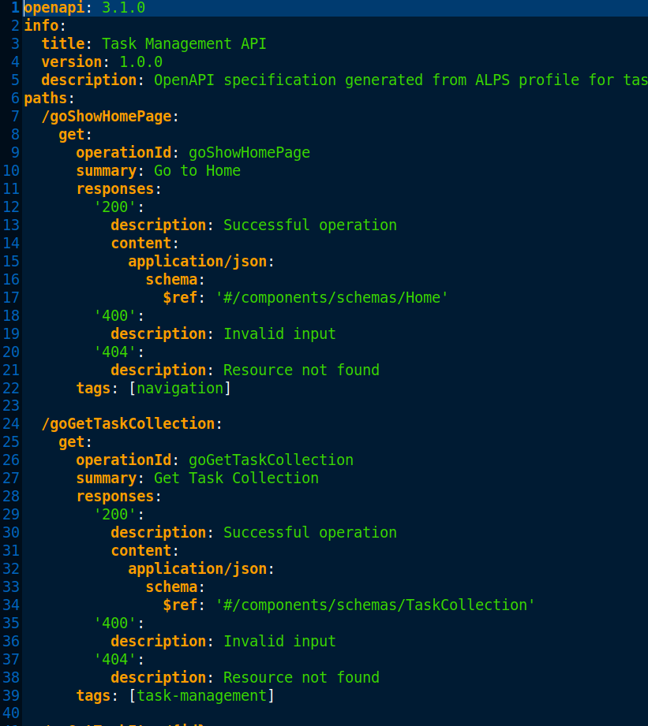
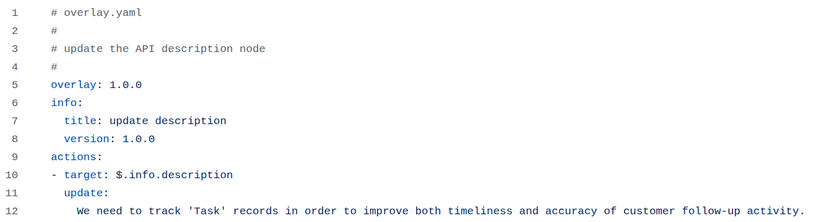
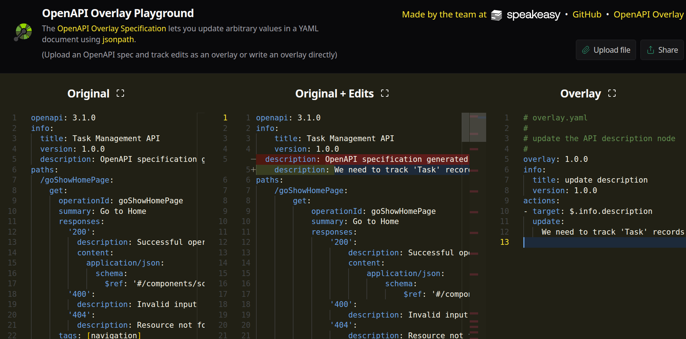
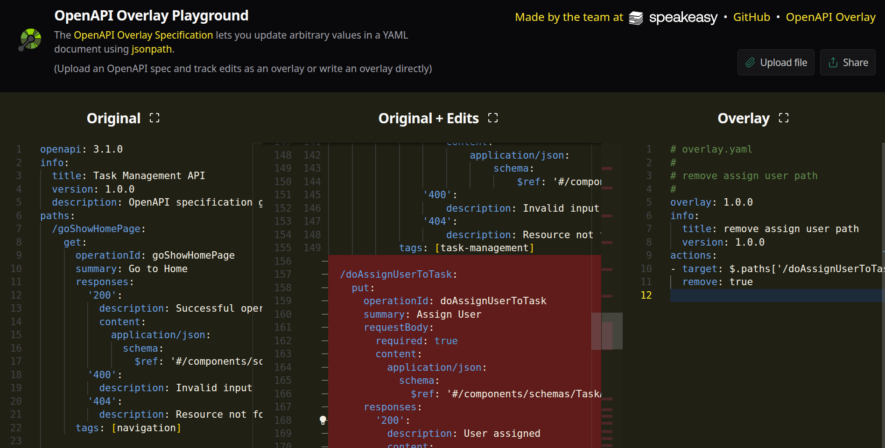
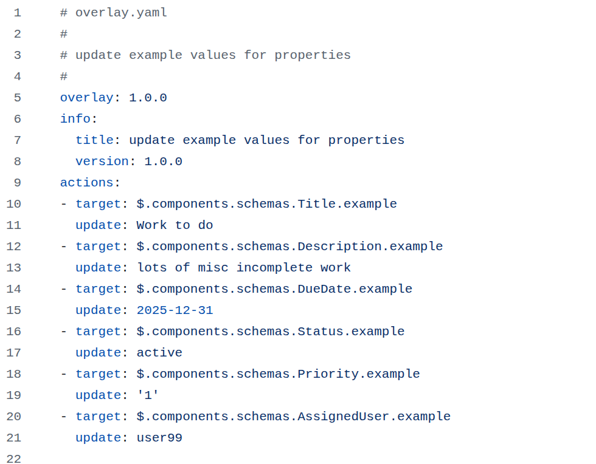
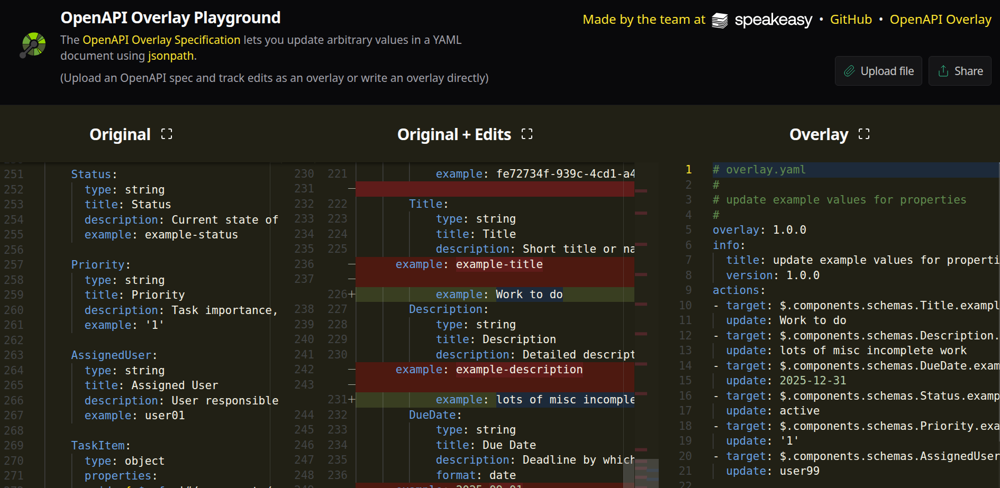

Overlay Examples
(11) Base Spec Example – Task Management

- Update the API description
- Summary, description, tags, response schema
- This will be modified by overlays in the next slides
- Used for mock/demo/test generation
(12) Example – Update Description
- Target:
$.info.description
- Action:
update: "..."
- Clean way to update messaging without rewriting the spec
- Useful for audience-specific tone and language
(13) Example – Update Description

(14) Example – Update Description

(15) Example – Remove Operation
- Target:
$.paths['/doAssignUserToTask']
- Action:
remove: true
- Removes assignment operation from external docs
- Use before publishing to external consumers
(16) Example – Remove Operation
(17) Example – Remove Operation

(18) Example – Update Schema Fields
- Target:
$.components.schemas.Title.example
- Action:
update: "Work to do"
- Fine-grained control of docs, schema, or examples
- Localized or clarified description overrides
(19) Example – Update Schema Fields

(20) Example – Update Schema Fields
